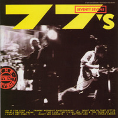
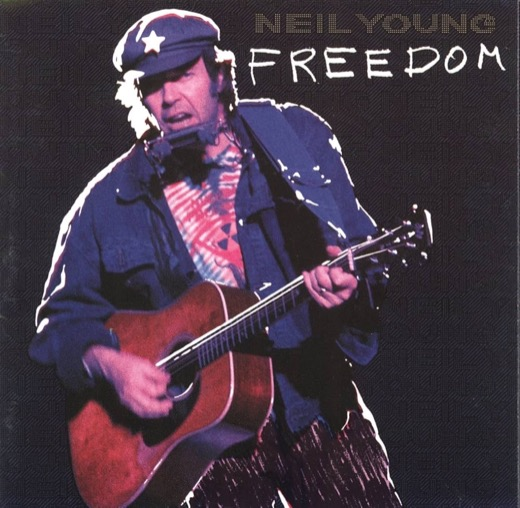
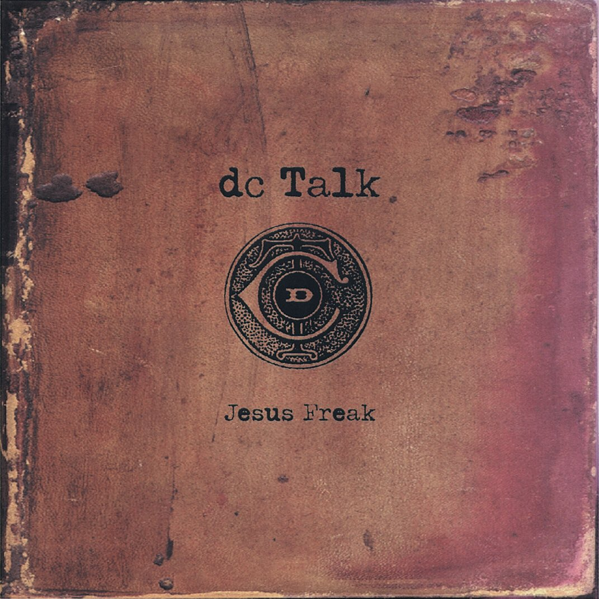
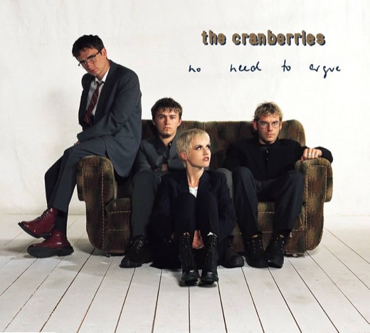
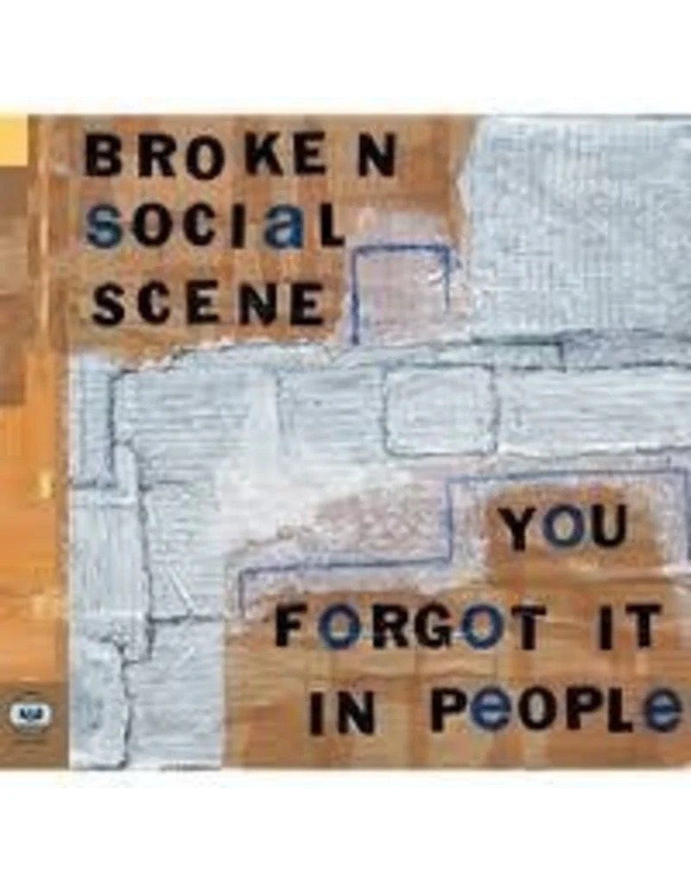

RAISED ON THE ANSWER KEY memory, music, and the making of a mind
HOMESCHOOL
CONSTRUCTIVISM
DISCOURSE
IDENTITY
↓ SCROLL

[Verse 1] You say you're sorry I can't get over it I said, "I forgive you" I can't get over it You say you'll learn from this mistake I can't get over it I should be givin' you a break But I can't [Verse 2] We put it behind us now I can't get over it Nothing left to remind us now I can't get over it They say that time heals every wound I can't get over it You thought the worst was over soon I can't get over it [Chorus 1] You need somebody Who can get over it You need somebody Who can get over it Huh [Guitar Solo] [Verse 3] We know you're wiser now I can't get over it I don't wanna despise you now I can't get over it I try to force myself to forget But it's hangin' right over my head [Verse 4] I've done so much worse so many times myself I can't get over it I got no right to indict somebody else I can't get over it You hurt us both, I'm hurtin' us more Not getting over it Could I say I ever really loved you if I don't get over it? Oh, yeah, yeah, yeah [Chorus 2] You need somebody Who can get over it You need somebody Who can get over it Ooh, yeah, oh, yeah, yeah, yeah You need somebody To take the pain of it Ooh, yeah, oh, yeah, yeah, yeah You need somebody Who was born to pay For you End it End it End it End it [Guitar Solo] [Outro] Who's gonna help me? Who's gonna help me Get past this thing? Get past this thing To a real place To a real place Give you some space, yeah Give you some space Where I can face it Where I can face it But can't erase it yet But can't erase it yet Oh, erase it (I can't get over it) Oh, erase it (I can't get over it) I can't erase it yet (I can't get over it) Oh, erase it, yes (I can't get over it) Come now, erase, erase, erase, erase, erase, erase, erase Oh, erase it (I can't get over it) Hey, come on, come on, yeah

[Verse 1] There’s colors on the street Red, white, and blue People shuffling their feet People sleeping in their shoes There’s a warning sign on the road ahead There’s a lot of people saying we’d be better off dead Don’t feel like Satan, but I am to them So I try to forget it any way I can [Chorus] Keep on rockin' in the free world Keep on rockin' in the free world Keep on rockin' in the free world Keep on rockin' in the free world [Verse 2] I see a woman in the night With a baby in her hand There's an old street light Near a garbage can Now she put the kid away and she’s gone to get a hit She hates her life and what she’s done to it There’s one more kid that’ll never go to school Never get to fall in love, never get to be cool [Chorus] Keep on rockin' in the free world Keep on rockin' in the free world Keep on rockin' in the free world Keep on rockin' in the free world [Electric Guitar Solo] [Verse 3] We got a thousand points of light For the homeless man We got a kinder, gentler machine gun hand We've got department stores and toilet paper Got styrofoam boxes for the ozone layer Got a man of the people says keep hope alive Got fuel to burn, got roads to drive [Chorus] Keep on rockin' in the free world Keep on rockin' in the free world Keep on rockin' in the free world Keep on rockin' in the free world

What will people think when they hear that I'm a Jesus freak? (It's the) What will people do (Freakshow) when they find that it's true? Ho, ho Ho, ho, ho-oh Ho, ho [Verse 1: Michael Tait] Separated, I cut myself clean From a past that comes back in my darkest of dreams Been apprehended by a spiritual force And a grace that replaced all the me I've divorced [Pre-Chorus: TobyMac] I saw a man with a tat on his big fat belly It wiggled around like marmalade jelly It took me a while to catch what it said 'Cause I had to match the rhythm of his belly with my head "Jesus Saves" is what it raved In a typical tattoo green He stood on a box in the middle of the city And he claimed he had a dream [Chorus: TobyMac, Michael Tait, Kevin Max, Kevin Max] What will people think when they hear that I'm a Jesus freak? What will people do when they find that it's true? (Ho, ho) I don't really care if they label me a Jesus freak There ain't no disguisin' the truth (Ho, ho, ho-oh) [Post-Chorus: TobyMac] There ain't no disguisin' the truth No, I ain't into hidin' the truth [Verse 2: Kevin Max & TobyMac] Kamikaze, my death is gain I've been marked by my Maker a peculiar display, yeah (Peculiar display) The high and lofty, they see me as weak 'Cause I won't live and die for the power they seek, yeah [Pre-Chorus: TobyMac] There was a man from the desert with naps in his head The sand that he walked was also his bed The words that he spoke made the people assume There wasn't too much left in the upper room With skins on his back and hair on his face They thought he was strange by the locusts he ate You see, the Pharisees tripped when they heard him speak Until the king took the head o' this Jesus freak [Chorus: TobyMac, Michael Tait, Kevin Max, Kevin Max] What will people think when they hear that I'm a Jesus freak? What will people do when they find that it's true? (Ho, ho) I don't really care if they label me a Jesus freak There ain't no disguisin' the truth (Ho, ho, ho-oh) What will people think when they hear that I'm a Jesus freak? What will people do when they find that it's true? (Ho, ho) I don't really care if they label me a Jesus freak There ain't no disguisin' the truth (Ho, ho, ho-oh) [Post-Chorus: Michael Tait] No, I ain't into hidin' [Bridge: Kevin Max, Kevin Max, TobyMac & Michael Tait] People say I'm strange, does it make me a stranger That my best friend was born in a manger? People say I'm strange, does it make me a stranger That my best friend was born in a manger? [Instrumental Break] [Chorus: TobyMac, Michael Tait, Kevin Max, & Kevin Max] What will people think when they hear that I'm a Jesus freak? What will people do when they find that it's true? (Ho, ho) I don't really care if they label me a Jesus freak There ain't no disguisin' the truth (Ho, ho, ho-oh) What will people think when they hear that I'm a Jesus freak? What will people do when they find that it's true? (Ho, ho) I don't really care if they label me a Jesus freak There ain't no disguisin' the truth (Ho, ho, ho-oh) [Outro: TobyMac, Michael Tait & Kevin Max] What will people think? What will people think? (Ho, ho, ho-oh) What will people do? What will people do? (Ho, ho-oh) I don't really care What else can I say? (Ho, ho, ho-oh) There ain't no disguisin' the truth Jesus is the way (Ho, ho, ho-oh)

[Verse 1] Another head hangs lowly Child is slowly taken And the violence caused such silence Who are we, mistaken? [Pre-Chorus] But you see, it's not me, it's not my family In your head, in your head, they are fightin' With their tanks and their bombs and their bombs and their guns In your head, in your head, they are cryin' [Chorus] In your head, in your head Zombie, zombie, zombie-ie-ie What's in your head, in your head? Zombie, zombie, zombie-ie-ie-ie, oh [Post-Chorus] Doo, doo, doo, doo Doo, doo, doo, doo Doo, doo, doo, doo Doo, doo, doo, doo [Verse 2] Another mother's breakin' Heart is takin' over When the violence causes silence We must be mistaken [Pre-Chorus] It's the same old theme, since 1916 In your head, in your head, they're still fightin' With their tanks and their bombs and their bombs and their guns In your head, in your head, they are dyin' [Chorus] In your head, in your head Zombie, zombie, zombie-ie-ie What's in your head, in your head? Zombie, zombie, zombie-ie-ie-ie Oh-oh-oh-oh, oh-oh-oh, eh-eh-oh, ya-ya [Instrumental Outro]
Back in school they never taught us what we needed to know Like how to deal with despair or someone breakin' your heart Twelve years I've held it all together But a night like this is beggin' to pull me apart I played it quiet, left you deep in conversation I felt uncool and hung out around the kitchen I remember I kept thinking that I know you never would And now I know I want to kill you like only a best friend could Everyone's caught on to everything you do Everyone's caught on to As if it happening wasn't enough I gotta go and write a song just to remind myself how bad it sucked Ignore the sun, the cover's over my head Wrote a message on my pillow that says "Jesse, stay asleep in bed" Don't apologize (I hope you choke and die) Search your shelf for something which to hang yourself They say you need to pray if you want to go to heaven But they don't tell you what to say when your whole life has gone to hell Everyone's caught on to everything you do Everyone's caught on to Everyone's caught on to everything you do (and I can't let you let me down again) Everyone's caught on to (and I can't let you let me down again) So is that what you call a getaway? Tell me what you got away with 'Cause I've seen more spine in jellyfish I've seen more guts in 11-year-old kids Have another drink and drive yourself home I hope there's ice on all the roads And you can think of me when you forget your seatbelt And again when your head goes through the windshield Is that what you call tact? You're as subtle as a brick in the small of my back So let's end this call and end this conversation And is that what you call a getaway? Tell me what you got away with 'Cause you left the frays from the ties you severed When you say "best friends" means friends forever Is that what you call a getaway? Tell me what you got away with 'Cause I've seen more spine in jellyfish I've seen more guts in 11-year-old kids Have another drink and drive yourself home I hope there's ice on all the roads And you can think of me when you forget your seatbelt And again when your head goes through the windshield Everyone's caught on to everything you do (and I can't let you let me down again) Everyone's caught on to (and I can't let you let me down again) Everyone's caught on to everything you do (and I can't let you let me down again) Everyone's caught on to (and I can't let you let me down again)

[Verse 1] Used to be one of the rotten ones and I liked you for that Used to be one of the rotten ones and I liked you for that Used to be one of the rotten ones and I liked you for that Now you're all gone, got your makeup on, and you're not coming back Can't you come back? Used to be one of the rotten ones and I liked you for that Used to be one of the rotten ones and I liked you for that Used to be one of the rotten ones and I liked you for that Now you're all gone, got your makeup on, and you're not coming back [Verse 2] Bleaching your teeth, smiling flash, talking trash under your breath Bleaching your teeth, smiling flash, talking trash under your breath Bleaching your teeth, smiling flash, talking trash under your breath Bleaching your teeth, smiling flash, talking trash under my window [Bridge] Park that car, drop that phone, sleep on the floor, dream about me Park that car, drop that phone, sleep on the floor, dream about me Park that car, drop that phone, sleep on the floor, dream about me Park that car, drop that phone, sleep on the floor, dream about me Park that car, drop that phone, sleep on the floor, dream about me Park that car, drop that phone, sleep on the floor, dream about me Park that car, drop that phone, sleep on the floor, dream about me Park that car, drop that phone, sleep on the floor, dream about me Park that car, drop that phone, sleep on the floor, dream about me Park that car, drop that phone, sleep on the floor, dream about me Park that car, drop that phone, sleep on the floor, dream about me Park that car, drop that phone, sleep on the floor, dream about me Park that car, drop that phone, sleep on the floor, dream about me Park that car, drop that phone Park that car, drop that phone Park that car, drop that phone Park that car, drop that phone Park that car, drop that phone [Outro] Used to be one of the rotten ones and I liked you for that Now you're all gone, got your makeup on, and you're not coming back

[Verse 1] Moved all my shit into my parent's basement And out of our old apartment And I know things changed But I'm not sure when I guess you'd call this regression I left a real job and a girlfriend Convinced myself that I'm brave enough for all of this, well I spent a whole year in airports And the floor feels like home Oh, at least we're never alone I lost track of the time zones, I'd call but you know, oh [Pre-Chorus] I'm running on empty And the late nights and the long drives start to get to me I'm just so tired [Chorus] I spent this year as a ghost And I'm not sure what I'm looking for A voice on a phone that you rarely answer anymore I came in here alone, came in here alone (But that doesn't scare me like it did seven months ago) I spent this year as a ghost And I'm not sure where home is anymore [Verse 2] Been on a steady fast food diet Like we're this generation's Morgan Spurlock but we don't admit defeat My body feels rejected I can't say that I blame it My heart keeps saying stay young My lower back seems to disagree Unrolled a cheap cotton blanket On an old dirty couch, oh I felt the year start to wind down Can't stand any dead space, empty beds bum me out, oh [Chorus] I spent this year as a ghost And I'm not sure what I'm looking for A voice on a phone that you rarely answer anymore I came in here alone, came in here alone (But that doesn't scare me like it did seven months ago) I spent this year as a ghost And I'm not sure where home is anymore [Outro] I came out swinging from a South Philly basement, caked in stale beer and sweat Under half-lit fluorescents and I Spent the winter writing songs about getting better And if I'm being honest, I'm getting there I came out swinging from a South Philly basement, caked in stale beer and sweat Under half-lit fluorescents and I Spent the winter writing songs about getting better And if I'm being honest, I'm getting there I came out swinging from a South Philly basement, caked in stale beer and sweat Under half-lit fluorescents and I Spent the winter writing songs about getting better Well, if I'm being honest, I'm getting there